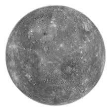

Mercury
Mercury is the smallest planet in our solar system and the nearest to the Sun. Mercury is only slightly larger than Earth's Moon. Its surface is covered in tens of thousands of impact craters. Despite its proximity to the Sun, Mercury is not the hottest planet in our solar system – that title belongs to nearby Venus, thanks to its dense atmosphere. But Mercury is the fastest planet, zipping around the Sun every 88 Earth days. Mercury is appropriately named for the swiftest of the ancient Roman gods.
